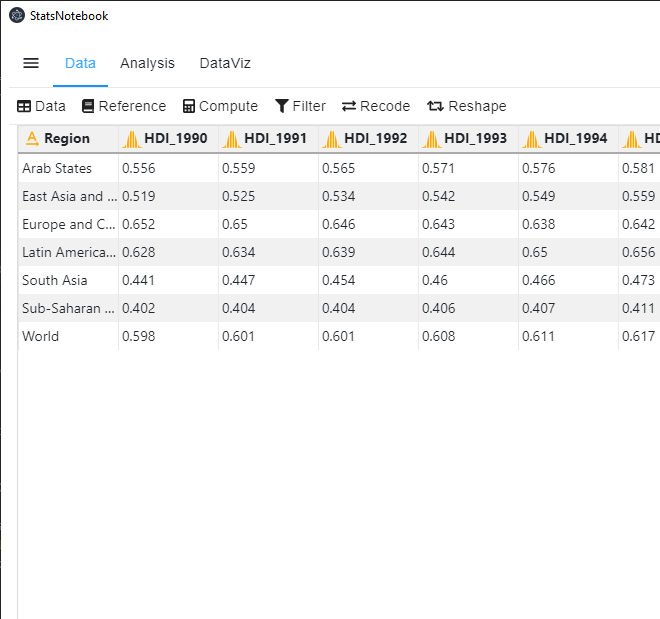
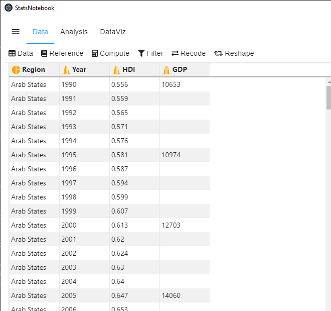

StatsNotebook
Line chart can be used to show the evoluation of numeric variables. StatsNotebook uses geom_line() from ggplot2 to build line chart.
We use the built-in Human Development Index dataset in this example. This dataset can be loaded into StatsNotebook using instruction here. This is a data from the United Nations Development Programmes (UNDP).
We will use line chart to visualise the evolution of Human Development Index from 1990 to 2018 across six regions. This dataset contains the following variables
- Region - Region from which the Human Development Index is calculated
- HDI_1990, … , HDI_2018 - Human Development Index from 1990 to 2018
- GDP_1990, … , GDP_2018 - Gross Domestic Product per capita from 1990 to 2018
This data is in wide format

And we will need to reshape it to a long format.

There will be only 4 variables after reshaping the data.
- Region - Region from whcih the Human Development Index is calcuated
- Year - Year
- HDI - Human Development Index
- GDP - Gross Domestic Product per capita
In this example, we will visualise the evolution of Human Development Index across six world regions.
Line Chart by a grouping variable
- Click DataViz at the top
- Click Line
- Select Line graph/ Time Series
- In the line graph panel, select HDI to Vertical Axis, Year to Horizontal Axis and Region to Fill color.
- Year can be treated as a numeric variable and Region is a categorical variable. If these variables are not yet coded as numeric and factor respectively, you will need to manually covert them into the correct variable type.
- Click Code and Run.
currentDataset %>%
drop_na(Region) %>%
ggplot(aes(y = HDI, x = Year, color = Region)) +
geom_line(na.rm = TRUE, size = 1)+
scale_fill_brewer(palette = "Set2")+
scale_color_brewer(palette = "Set2")+
theme_bw(base_family = "sans")+
theme(legend.position = "bottom")
"Chan, G. and StatsNotebook Team (2020). StatsNotebook. (Version 0.1.0) [Computer Software]. Retrieved from https://www.statsnotebook.io"
"R Core Team (2020). The R Project for Statistical Computing. [Computer software]. Retrieved from https://r-project.org"
"Wickham H (2016). ggplot2: Elegant Graphics for Data Analysis. Springer-Verlag New York. ISBN 978-3-319-24277-4, https://ggplot2.tidyverse.org"
Output from the above R codes